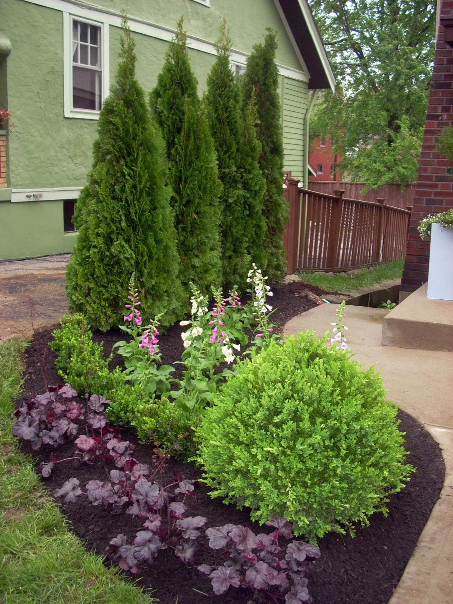
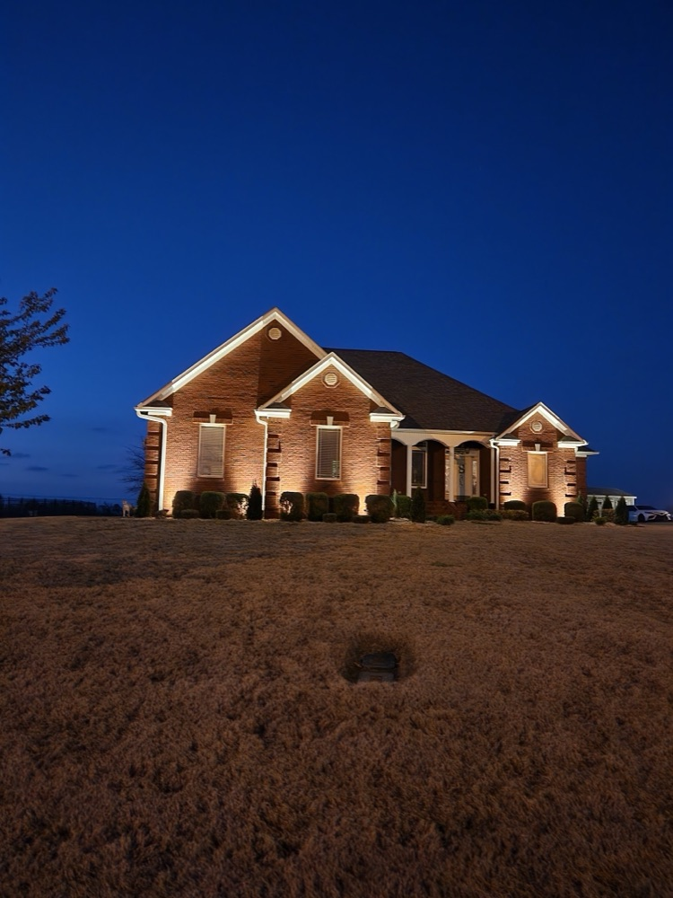
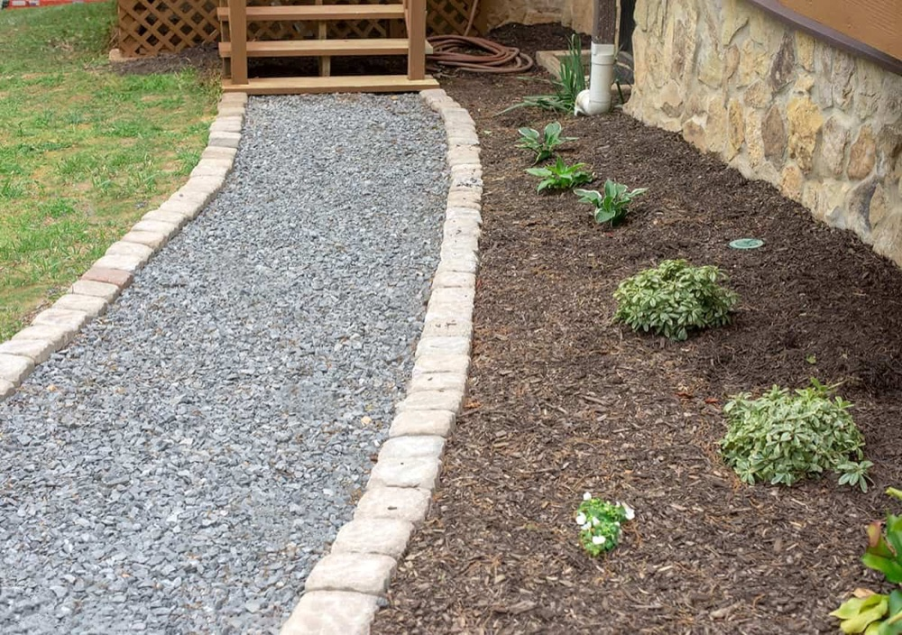
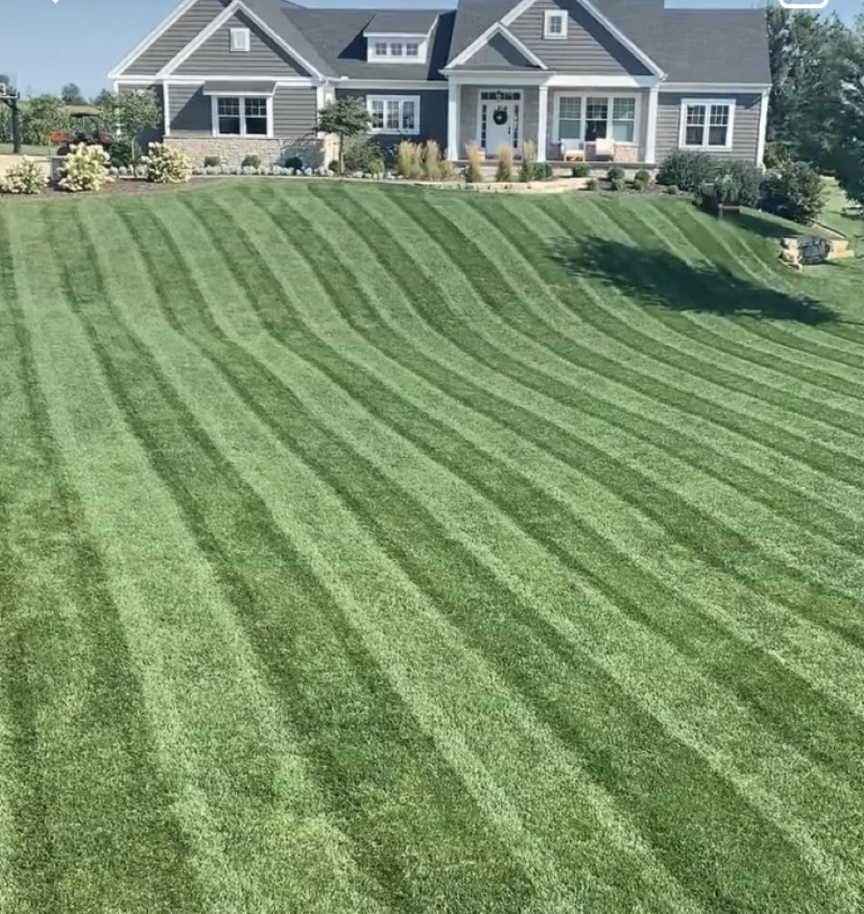
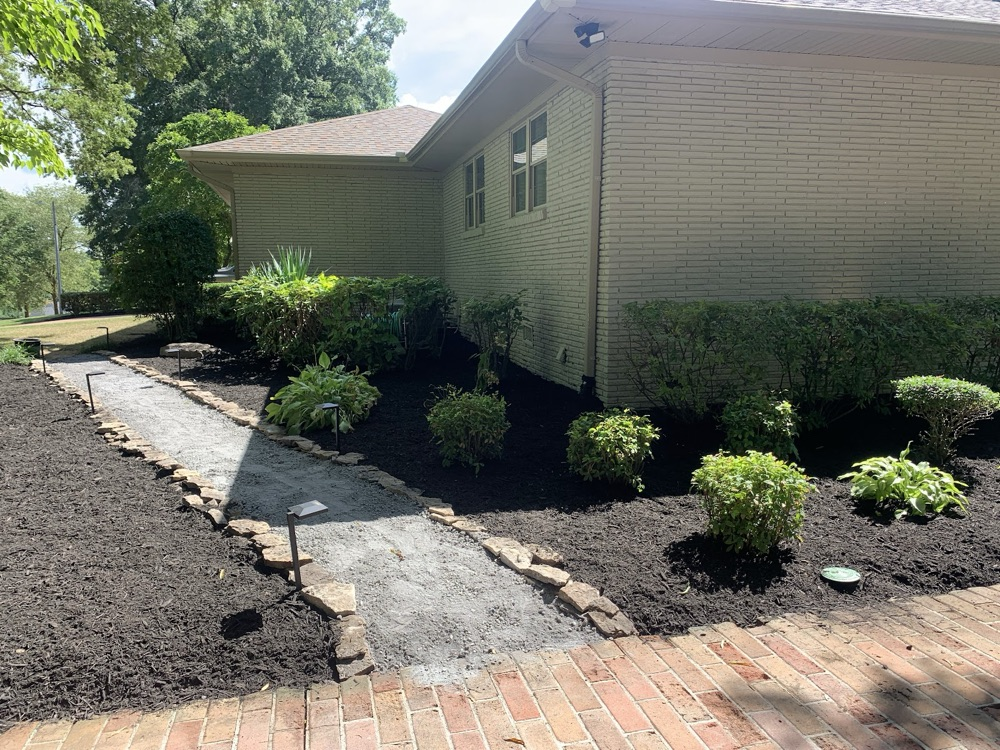
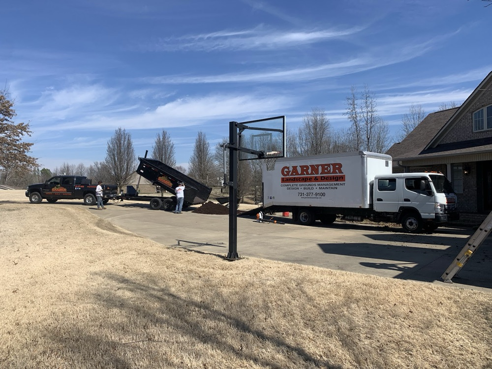

Newbern, Tennessee
Design. Build. Maintain.
Garner Landscape & Design shapes the whole outdoors — landscape design and planting, low-voltage lighting, hardscape paths, tree work and ongoing lawn and grounds care. One crew that designs it, builds it, and keeps it looking right.

Why people call Garner
Design through maintenance
The same crew that designs and installs the landscape comes back to keep it looking right.
Residential & commercial
Front-yard redesigns to commercial grounds management — handled by one local team.
A clean 5.0 across 26 reviews
A perfect 5.0 rating across 26 reviews from Newbern-area homeowners and businesses.
What we do
Landscape Design & Installation
Beds, plantings, foundation landscapes and full design-build projects shaped to the property.
Landscape Lighting
Low-voltage lighting that brings out the architecture and the plantings after dark.
Hardscapes & Paths
Stone-edged gravel walks, mulch beds and the finishing touches that tie a yard together.
Tree Work
Trimming and removals handled with the right equipment and a careful crew.
Lawn & Grounds Care
Mowing, mulching and seasonal upkeep that keeps residential and commercial grounds sharp.
Mulch & Material Delivery
Mulch, gravel and bed material delivered and installed — beds refreshed start to finish.
Recent work
A few projects around Newbern and Dyer County.





Find us
640 TN-77, Newbern, TN 38059
Get directionsServing Newbern, Dyersburg & Dyer County — residential and commercial.
Hours
| Mon–Fri | 8:00 AM – 5:00 PM |
| Saturday | 8:00 AM – 12:00 PM |
| Sunday | Closed |
Let's design your yard
From a full landscape redesign to keeping the grounds sharp all season — give Garner a call or text.